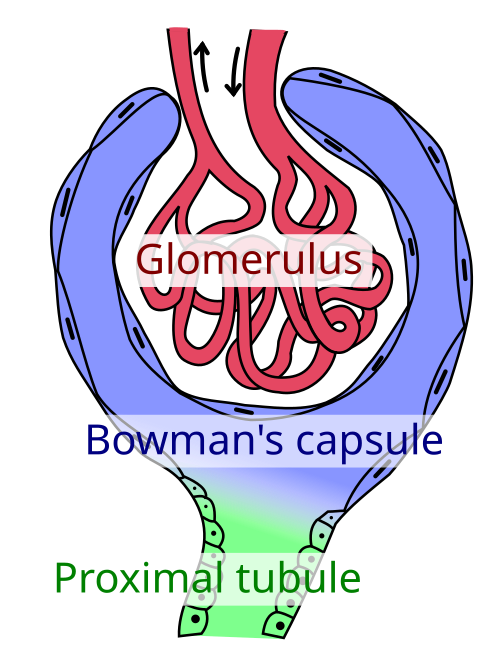

Glossary
Nephron
The microscopic functional unit of the kidney responsible for filtering blood.
Glomerulus
A network of capillaries in the nephron where blood filtration begins.
Antidiuretic Hormone (ADH)
A hormone that helps regulate water balance by controlling urine concentration.
Kidneys
Bean-shaped organs that filter blood to produce urine and remove waste from the body.
Ureters
Tubes that transport urine from the kidneys to the urinary bladder.
Urinary Bladder
A muscular organ that stores urine until it is ready to be expelled.
Renal Cortex
The outer layer of the kidney where initial filtration of blood occurs.

Renal Medulla
The inner region of the kidney that contains renal pyramids and collecting ducts.

Renal Pyramid
Triangular-shaped tissue in the renal medulla containing tubules for urine transport.
Renal Capsule
A tough fibrous layer surrounding the kidney for protection.

Afferent Arteriole
The small artery that carries blood toward the glomerulus for filtration.

Efferent Arteriole
The small artery that carries filtered blood away from the glomerulus.

Podocytes
Specialized cells in the Bowman’s capsule that help with blood filtration in the glomerulus.
Peritubular Capillaries
Capillaries surrounding nephron tubules involved in reabsorption and secretion.

Trigone
A triangular area in the bladder formed by the ureters and urethra openings.
Detrusor Muscle
The smooth muscle in the bladder wall responsible for contracting to expel urine.
Internal Urethral Sphincter
Involuntary muscle that controls the release of urine from the bladder into the urethra.
External Urethral Sphincter
Voluntary muscle that allows control over the release of urine through the urethra.
Urethra
A tube that carries urine from the bladder to the outside of the body.
Renal Artery
The blood vessel that brings oxygenated blood into the kidney.
Renal Vein
The blood vessel that drains deoxygenated, filtered blood from the kidney.
Bowman’s Capsule
A cup-like sac at the beginning of the nephron that collects the filtrate from the glomerulus.
Loop of Henle
A section of the nephron that concentrates urine by reabsorbing water and salts.
Collecting Duct
Final part of the nephron where urine is collected and transported to the renal pelvis.
Renal Pelvis
A funnel-shaped structure that collects urine from the kidney and passes it to the ureter.
Micturition
The process of urinating or expelling urine from the bladder.
Filtration
The first step in urine formation, where blood plasma is filtered in the glomerulus.
Reabsorption
Process of moving water and useful substances back into the bloodstream from the nephron.
Secretion
The addition of waste products and toxins into the nephron from the blood.
Urine
A liquid waste product composed of water, salts, and urea, excreted by the kidneys.
Urea
A nitrogenous waste product formed in the liver and excreted in urine.
Homeostasis
The body’s mechanism to maintain a stable internal environment, aided by the kidneys.